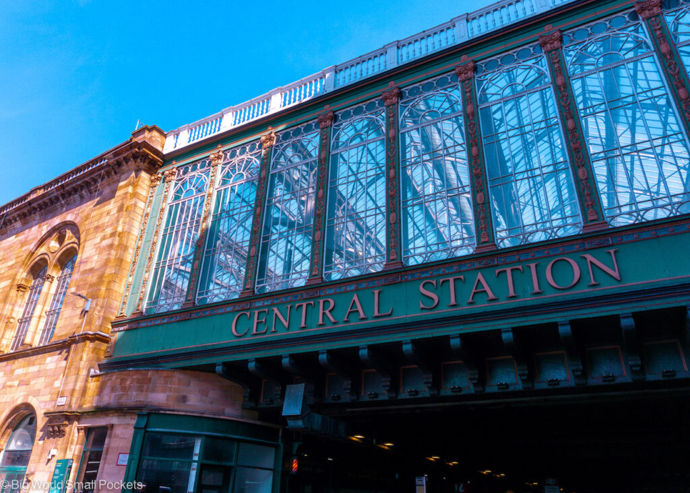

From the Hielanman's Umbrella to the Necropolis. Victorian gateway to medieval hilltop. The city that built the ships that built the empire, and the workers who changed the world. No app. No group. No booking. First 3 stops free.
From Central Station to the Necropolis. From the Hielanman's Umbrella to John Knox on the hill. From the ghost of a demolished university to the Cathedral the city refused to lose. Ten stops. Six hundred years.
Explore more
cities with Stepcast
Leave a quick review. It helps other travellers find us and means a lot.
♥ Thank you so much. We'll read it and add it to the site shortly.
You have seen what this tour is like. The next 7 stops go further. €4.99, yours to keep forever.
Unlock Full Tour - €4.99Payments powered by Lemon Squeezy & Stripe